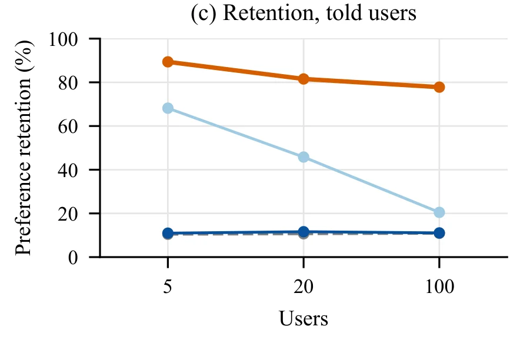

Who Remembers What? Multi-Granularity Memory Extraction for Multi-User, Multi-Agent Interaction
Yunzhe Wang Erhan Unal Sheng Zhang Shabnam Ghadar Peng Tang
AWS Agentic AI
MixUA lets users and AI agents learn from one another, filing each lesson under a PAIR, USER, AGENT, or GLOBAL scope, by whom it helps and what it may reveal.
- up to
- 16pts
- pass-rate gain over no memory
- up to
- 5pts
- over a single global memory
- up to
- 90%
- of stated preferences retained
- at most
- 0.02%
- of privacy probes find a leaked private fact
Five users, seven agents.
Abstract
Self-evolving agents improve their own skills, memory, and harness code from experience without retraining the base LLM, and group-evolving agents go further by sharing these lessons across agents. Yet most such systems overlook that sharing across users and heterogeneous agents requires deciding who can benefit from each lesson and what information must remain private. We present MixUA, a memory system that distills independent user-agent trajectories into lessons and assigns each lesson to a user-agent pair, user, agent, or global scope according to whom it benefits and what it may disclose. For evaluation, we introduce CrossLearnBench, a mixed-user-agent benchmark that pairs established agent tasks with user preferences and privacy probes that test whether private facts leak into memory other users can read. With five users and seven agents, MixUA raises pass rates by up to 16 points over no memory and 5 over a single global memory, even on tasks previously tried only by other users on other agents. It retains up to 90% of previously stated preferences, and at most 0.02% of privacy probes find a planted private fact in a forbidden scope. We hope MixUA offers a scalable path toward a global system where users and agents co-evolve.
Who should remember each lesson?
- PAIR
- This user with this agent. Preferences that differ by agent.
- USER
- This user, on any agent. A preferred document format.
- AGENT
- This agent, for any user. A tool-calling quirk.
- GLOBAL
- Everyone. A library defect, or the fix for a task.
Lessons from private details land only in the user's own USER or PAIR memory.
How it works
Swipe to see the whole figure.
An LLM splits each run into a shareable part and a private part.
Each lesson is written to the scope it fits; private ones stay with their user.
Before each task, a pair reads only what it is allowed to see, most relevant first.
Results
Scheduled tasks
Only MixUA gets both
Single-scope memories trade task success for preferences; MixUA gains 13-16 points while retaining 80-90%.
Random tasks, 8 rounds
It helps on new tasks
On tasks no pair had tried before, MixUA gains 10.1 points, nearly twice the 5.5 of a single global memory.

- No memory
- PAIR only
- GLOBAL only
- MixUA
5 to 100 users
It holds at 100 users
MixUA still retains 78% of stated preferences; a single global memory retains 11%.
CrossLearnBench
Established agent tasks, plus synthetic users with planted preferences and private facts.
- AutoCodeBench
- FeatureBench
- SpreadsheetBench (verified)
- SWT-Bench (verified)
- USACO
- Terminal-Bench 2.0
- VMax Tasks


BibTeX
@misc{wang2026whoremembers,
title = {Who Remembers What? Multi-Granularity Memory Extraction for Multi-User, Multi-Agent Interaction},
author = {Wang, Yunzhe and Unal, Erhan and Zhang, Sheng and Ghadar, Shabnam and Tang, Peng},
year = {2026},
eprint = {2611.10439},
archivePrefix = {arXiv},
url = {https://arxiv.org/abs/2611.10439}
}